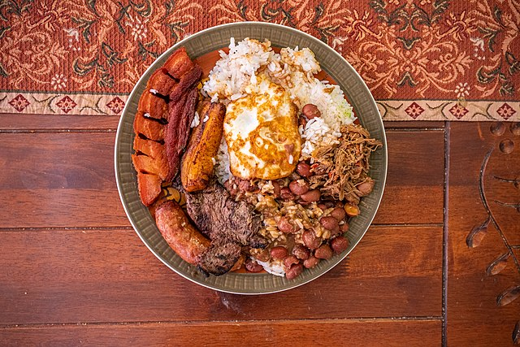

Colombia has a rich history when it comes to their food and the ingredients they use, and how it is all prepared. It has been heavily influenced by the indigenous background and the geographical regions that are found in the country. The Muisca, Quimbaya, and Tairona indigenous groups were there before the Spanish came and brought African slaves. From there, the different foods were meshed into one delicious cuisine.
Colombia has several different regions geographically, but when it comes to the foods that are eaten in the regions, it comes out to five distinct regions. The most heavily populated region in Colombia is the Andean region. In this region you will find influence from all the indigenous groups along with the Spanish and African influences. They combine ingredients like corn, meats, yuca, beans, and dairy products. Colombia's national dish also comes from here. It is known as the Bandeja Paisa which is a platter filled with meats, rice, beans, fried banana, eggs, and more. The flavors come together to make for a delicious dish!

The Bandeja Paisa is one of Colombia's national dishes
Colombia has a lot of coastline and has many hot climates. Beacuse of this, they have another region, the Carribean region, that reflects that and the African and Indigenous influences from the area. Here they eat a lot of fish, fresh tropical fruits like mango, rice, and yuca. One of the dishes that is eaten regularly is the Sancocho de Pescado which is a type of stew made from fresh fish mixed with banana, yuca, and more seasoning served with coconut rice. This is very different than its coast line region, the Pacific region. In the Pacific region, the African influence mixes with the Spanish influence and boasts ingredients like fish, corn, avocado, yuca, and banana. One of their typical dishes is a type of empanada called Empanada de Mariscos which is a corn based empanada filled with different seafoods like shrimp.
The Sancocho de Pescado is widely enjoyed in the Carribean region
The Orinoquía region is located next to the Orinco river which contributes to the type of foods they have there. They adopted indigenous methods early on and have only mixed a little bit with the African influence. They use locally sourced ingredients like fish, beef, yuca, banana, and rice. In fact one of the dishes that is eaten the most there is a type of grilled beef served with rice and yuca known as mamona. In the Amazons region, they eat something entirely different. They use almost entirely indigenous methods and have been strongly influenced by that. They eat a lot of yuca, banana, banana leaves, and exotic fruits like camu camu and guava. A dish the often prepare is the tacacho which is fried banana mixed with butter and bits of meat.
Across the whole country, they enjoy what is known as the arepa. This is a sort of bread like thing made out of corn flour, water, and salt. It is prepared and filled with different things across the country, but here you can take a look at a few more of those ways.
Arepa Ingredients List
Amount
Ingredient
10 oz
warm water
10 oz
masarepa (corn flour)
1 tsp
salt
1 oz
unsalted butter
To learn even more about the history of Colombia's cuisine, click here.